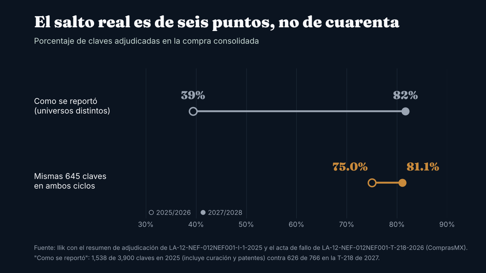
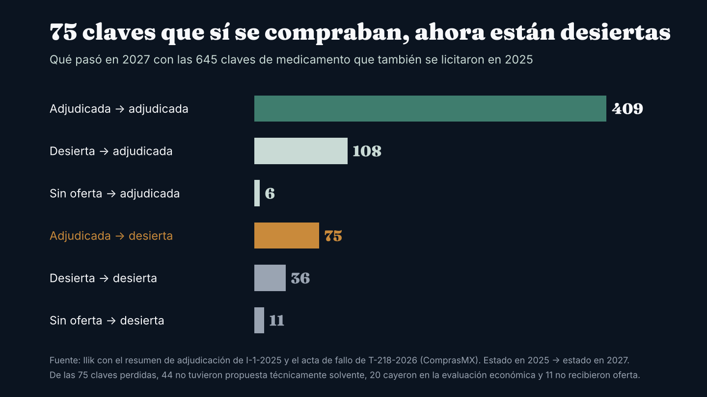
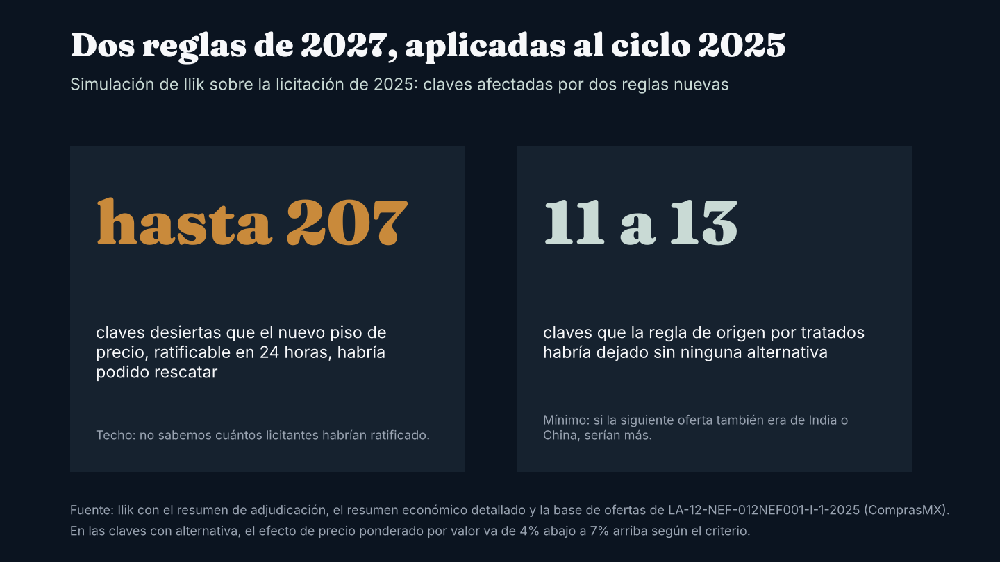

Observatorio / Compras públicas de medicamentos
InvestigaciónQuién ganó, quién perdió y qué falta en la compra de medicamentos 2027-2028 del gobierno: el posible impacto en el mercado privado
El gobierno cambió las reglas y reacomodó a sus proveedores. Clave por clave, la adjudicación mejoró seis puntos, no cuarenta, y 75 medicamentos que tenían proveedor en 2025 se quedaron sin él, entre ellos sueros, soluciones para diálisis y penicilinas. Qué puede significar para los hospitales privados antes de enero.

La compra de medicamentos genéricos del gobierno federal para 2027 y 2028 cerró con 626 de 766 claves adjudicadas, 82% del total.7 La anterior, para 2025 y 2026, había adjudicado en su fallo 1,538 de 3,900 claves, 39%.1 Leída así, la mejora parece enorme.
No lo es tanto. Los dos procedimientos no compraban lo mismo: el de 2025 mezclaba medicamentos, material de curación, laboratorio y equipo; el de 2027 solo genéricos, oncológicos y antiinfecciosos. Si se comparan las mismas claves, la mejora se achica y aparece un grupo de claves que a cualquier hospital privado le conviene tener en la mira.
Dos ciclos, dos diseños
El ciclo 2025/2026 se licitó en un solo procedimiento, LA-12-NEF-012NEF001-I-1-2025, con fallo el 13 de enero de 2025. Según el resumen oficial de adjudicación, de sus 3,900 claves, 1,538 quedaron adjudicadas, 1,044 desiertas por falta de propuesta solvente y 1,318 sin oferta.1
Ese procedimiento no sobrevivió. El 8 de abril de 2025 la Secretaría Anticorrupción y Buen Gobierno declaró su nulidad total, y Birmex levantó el aviso de nulidad el 10 de abril.23 El subsecretario de Salud Eduardo Clark explicó que se detectó un posible sobreprecio de cerca de 13 mil millones de pesos en 175 claves.4 La reposición respetó las claves de patente, reasignó 954 claves a proveedores ya adjudicados y llevó 837 a subasta inversa.5 Después vinieron procedimientos complementarios; el último, para claves de 2026, dejó desiertas 1,026 de 2,029.6
Para 2027/2028 el gobierno separó la compra: patentes y fuente única por negociación directa, genéricos en la licitación T-218, material de curación en la T-222 y una tercera licitación internacional abierta, la I-285, para lo que no se cubriera bajo tratados comerciales. Los resultados publicados son estos:789
- T-218, genéricos, oncológicos y antiinfecciosos: 766 claves; 626 adjudicadas y 139 desiertas (89 sin propuesta técnicamente solvente, 30 en la evaluación económica y 20 sin propuesta), más una cancelada.
- T-222, material de curación: 363 claves; 239 adjudicadas y 124 desiertas, la mayoría por evaluación técnica.
- I-285, internacional abierta: 1,169 renglones; su fallo estaba programado para el 13 de octubre de 2026 y al 27 de octubre no se había publicado el acta.
La comparación justa
Tomamos las 766 claves de la T-218 y buscamos qué pasó con cada una en el procedimiento principal de 2025. Hay 645 claves que se licitaron en ambos ciclos. En ese universo común, la tasa de adjudicación pasa de 75.0% a 81.1%.17

Es una mejora real: 108 claves que en 2025 quedaron desiertas ahora tienen proveedor. Pero el promedio esconde el movimiento contrario. Hay 75 claves que en el fallo de 2025 tenían proveedor y que en la T-218 quedaron desiertas.

Qué hay en esas 75 claves
Según el acta de fallo, 44 de las 75 quedaron desiertas porque ninguna propuesta fue técnicamente solvente, 20 cayeron en la evaluación económica (por precio o porque la cantidad ofertada no alcanzaba la demanda) y 11 no recibieron oferta.7
Entre ellas hay productos de uso hospitalario diario. Esta es una selección de 14; las 14 tenían entre sus proveedores adjudicados en el fallo de 2025 al mismo fabricante nacional, Laboratorios PiSA, que en 12 de ellas era el único:17
- Soluciones para diálisis peritoneal al 1.5%, 2.5% y 4.25%, en bolsa de 2 litros.
- Solución Hartmann y cloruro de sodio al 0.9% en 100 ml.
- Bicarbonato de sodio, gluconato de calcio y sulfato de magnesio inyectables.
- Bencilpenicilina procaínica con cristalina, en dos dosis, y bencilpenicilina sódica cristalina.
- Imipenem con cilastatina, midazolam y nimodipino inyectables.
Las otras 61 claves no son de un solo proveedor: en el fallo de 2025 se repartían entre más de 30 empresas, entre ellas Fraca (10 claves), Nucitec (8) y Fresenius Kabi (7), además de dos claves más de PiSA.1
PiSA sigue en la compra pública. En la T-218 y la T-222 obtuvo contratos por un máximo de 1,085.3 millones de pesos, sin contar la I-285 ni las negociaciones directas.78 De las 127 claves que tuvo en el fallo de 2025 y que volvieron a licitarse en la T-218, 111 se adjudicaron, a PiSA o a otros proveedores, y 16 quedaron desiertas.17 El acta muestra que en nimodipino PiSA ofertó solo 50% de la demanda y su oferta se desechó por esa razón; en dos de las otras 15 nadie presentó propuesta; en las 13 restantes no encontramos en el acta una propuesta de PiSA.7 En algunas de estas claves otras empresas sí pasaron la evaluación técnica, pero sus ofertas cubrían solo una parte de la demanda y también se desecharon.7
Ilik pidió comentarios a Laboratorios PiSA y a Birmex el 28 de octubre de 2026. Al cierre de esta edición no habían respondido; la pieza se actualizará si lo hacen.
Quién ganó y quién perdió
La Secretaría de Salud reportó, según N+, que los contratos con proveedores mexicanos en medicamentos pasaron de 27 mil a 62 mil millones de pesos entre ciclos.20 Los contratos publicados en ComprasMX muestran que el reparto cambió mucho entre empresas. Antibióticos de México pasó de 109 millones de pesos en los contratos del ciclo 2025/2026 a 10,792 millones en la T-218, donde es el mayor proveedor con 13% del monto máximo.721 Laboratorios PiSA, el mayor proveedor por monto de contratos del procedimiento principal de 2025, tiene 1.1% de la T-218.721 Del lado de lo que no se compró, quedan las 139 claves desiertas de la T-218 y las 124 de la T-222.78
Lo que cambió en las reglas
La compra 2027/2028 es la primera grande bajo la nueva Ley de Adquisiciones, vigente desde el 17 de abril de 2025, y su Reglamento, publicado el 18 de diciembre de 2025.1011 Cinco cambios pesan en el resultado:
- Origen por tratados. La T-218 y la T-222 solo aceptaron bienes de México o de países con tratado y capítulo de compras públicas, como el T-MEC, la Unión Europea, el CPTPP, Japón, el Reino Unido y la Alianza del Pacífico.78 Los productos de India y China solo pueden entrar por la I-285.9
- Subasta inversa casi universal. Las ofertas subsecuentes de descuento se aplicaron incluso a claves con una sola propuesta solvente. Según El CEO, el ahorro de esa fase supera 6 mil millones de pesos.12
- Hasta cuatro proveedores por clave, siempre que cada uno quede a no más de 10% del precio del primero; quien queda más arriba se desecha.7
- Piso de precio mínimo. El umbral de precio "no conveniente" no puede ser menor a 40% por debajo del promedio, y la convocante puede pedir al licitante que ratifique su precio por escrito en 24 horas; si lo ratifica, la oferta se considera solvente.1011
- Requisitos operativos más exigentes: inventario adicional de 5% de la demanda anual, haber cumplido al menos 50% de órdenes previas, entregas en más de 400 puntos y etiquetado exclusivo para gobierno.1314
Simulación: las reglas de 2027 aplicadas al ciclo 2025
Con el resumen de adjudicación de 2025 y la base completa de ofertas económicas de esa licitación (10,296 ofertas con precio, de 400 licitantes), estimamos el efecto de dos reglas.119 Es una simulación con supuestos a la vista, no una reconstrucción exacta.
Origen por tratados. En 2025, 172 claves se adjudicaron solo a productos de origen indio o chino: 62 medicamentos y 110 de material de curación y auxiliares, con un valor máximo de 7,268 millones de pesos.1 Con la regla de 2027 habrían tenido que ir al siguiente oferente. Tomamos como alternativa la oferta más baja de otro licitante en la misma clave y probamos tres criterios sobre qué ofertas bajas cuentan: todas, solo las de al menos la mitad del precio ganador, o solo las que no se desecharon por precio no conveniente. Según el criterio, entre 11 y 13 claves no tenían ninguna otra oferta y habrían quedado desiertas. En las demás, la mediana de la siguiente oferta quedó entre 4% y 9% arriba, y el efecto ponderado por valor va de 4% abajo a 7% arriba, según el criterio. La base no dice de dónde era el producto de los perdedores; si la siguiente oferta también era india o china, serían más. Por eso el conteo es un mínimo.
Dicho de otro modo: la regla de origen no encarece la compra de forma clara. Lo que hace es quitar la alternativa en un grupo pequeño de claves donde el único oferente tenía producto indio o chino, que son las de mayor riesgo de quedar desiertas.
Piso de precio. En 2025, 369 claves tuvieron al menos una oferta desechada por precio "no conveniente", es decir, por ser demasiado baja; de ellas, 207 terminaron desiertas.19 Con la regla de 2027, esos licitantes habrían podido ratificar su precio. En el mejor caso, hasta 207 claves habrían tenido proveedor. Es un techo: supone que la convocante habría pedido la ratificación y que todos la habrían dado.

Un dato de 2027: la subasta inversa. En la T-218, incluso ofertas que perdieron quedaron por debajo del precio aceptable. En una muestra de 121 claves, que no es representativa porque son las que el acta permite leer, la mediana quedó 19% abajo. Cuando la oferta se desechó por quedar más de 10% arriba de la primera fuente, el ganador quedó al menos 9% por debajo de ella. Ejemplo en el acta: en la clave 010.000.5736.01, con precio aceptable de $201.15, un licitante desechado bajó a $29.56.7
El promedio mejoró seis puntos. El riesgo para un hospital está en las claves que se movieron en sentido contrario.
Qué significa para el hospital privado: cuatro escenarios
Son escenarios, no pronósticos. Cada uno dice qué lo detonaría, qué señal vigilar y qué puede hacer un área de compras.
Escenario 1. El gobierno sale a comprar lo desierto a principios de 2027. Las 139 claves desiertas de la T-218 y las 124 de la T-222 siguen siendo necesidad pública desde el 1 de enero. Revisamos los 1,169 renglones de la I-285: ninguna de las 139 claves desiertas de la T-218 está ahí.79 Para cubrirlas, el gobierno tendría que recurrir a otra licitación, a adjudicación directa o a compras de cada institución. Si esas vías no llegan a tiempo, podría comprar con urgencia a fabricantes que también surten al canal privado. Hay antecedente: según Reforma, Birmex adjudicó directamente al menos 118 mil millones de pesos para cubrir lo que no se adjudicó en el ciclo 2025, sobre todo producto importado.15 Señal: adjudicaciones directas en ComprasMX con claves de la lista de desiertas. Qué hacer: identificar en el consumo propio las claves equivalentes y asegurar cobertura del primer trimestre antes de diciembre.
Escenario 2. El volumen público cambia de tamaño. La T-218 convocó entre 707 y 1,768 millones de piezas al año.7 INEFAM estima el mercado total de medicamentos en 5,180 millones de piezas en 2025, con 27% para el gobierno, unos 1,400 millones.16 Las cifras no se miden igual, pero indican que si las instituciones piden cerca del máximo, la parte pública del volumen subiría. El efecto puede ir en sentido contrario en las claves que un fabricante dejó de surtir al gobierno: esa capacidad queda disponible para el canal privado. Señal: órdenes de suministro de 2027 por arriba del mínimo contratado, o avisos de asignación por cupo de los distribuidores. Qué hacer: en categorías con pocos fabricantes, acuerdos de volumen con fecha de entrega, y preguntar a cada proveedor qué hará con la capacidad que no colocó en la compra pública.
Escenario 3. La presión del precio público se traslada al canal privado. Los precios públicos quedan fijos en pesos por dos años, después de una subasta que en la muestra revisada los dejó alrededor de 19% abajo del precio aceptable. Es posible que algunos fabricantes busquen margen en el canal privado; no hay evidencia publicada de que ya ocurra en México. La referencia internacional es parcial: en la compra por volumen de China, los productos ganadores bajaron en promedio 62% en las ciudades piloto, mientras que algunos medicamentos alternativos subieron en el segundo año en cuatro categorías, y algunos fabricantes originales se reorientaron al canal privado.1718 El esquema chino garantiza volumen y no es igual al mexicano; sirve como señal, no como pronóstico. Señal: aumentos de lista en el primer trimestre de 2027 por arriba de la inflación general. Qué hacer: tener a la mano el precio público de cada clave que compra el hospital.
Escenario 4. Inventarios separados por canal. El etiquetado exclusivo para gobierno, cuyo costo Canifarma estima en cerca de 10 mil millones de pesos, separa físicamente el inventario público del privado.14 Reduce el riesgo de desvío de producto público, pero también impide redirigir excedentes de un canal a otro cuando uno se queda corto. Señal: faltantes simultáneos en ambos canales para la misma molécula. Qué hacer: no depender de un solo distribuidor en las claves de la lista de desiertas.
Nota metodológica
Los conteos de claves salen de documentos oficiales descargados de ComprasMX: el resumen de adjudicación, el resumen económico detallado y la base de ofertas económicas de LA-12-NEF-012NEF001-I-1-2025; el aviso de nulidad del 10 de abril de 2025; las actas de fallo de T-218-2026 y T-222-2026, y las tablas de partidas y contratos del portal. Las actas están escaneadas; se leyeron con reconocimiento óptico de texto y cada cifra citada se revisó contra la imagen original. El cruce entre ciclos se hizo por clave del Compendio Nacional de Insumos; las claves que cambiaron de código entre ciclos no se emparejaron (en el cruce con la I-285, el misoprostol de 200 µg aparece en otra presentación, 28 tabletas en lugar de 12), y una clave con registro ambiguo en 2025 se trató como sin oferta. Los precios y proveedores de 2025 corresponden al fallo original, que se declaró nulo; los resultados finales de la reposición pueden diferir. Para PiSA se consideró la razón social Laboratorios PiSA, S.A. de C.V. Los montos de contratos son máximos de contratos abiertos, sin IVA; el ejercicio real puede ser menor. Todas las cifras pasaron por una verificación independiente y el texto por una revisión editorial independiente antes de publicarse.
Transparencia. Ricardo Rodríguez, fundador de Ilik, trabajó en Laboratorios PiSA hasta julio de 2026. Este análisis usa solo documentos públicos y las fuentes citadas; no usa información interna de PiSA ni de ningún otro laboratorio. Los párrafos sobre PiSA fueron revisados por un editor sin vínculo con la empresa. Ilik ofrece servicios de inteligencia de compras a hospitales privados. Correcciones y comentarios: contacto@ilikanalytics.com.
Fuentes
- Birmex. Resumen de adjudicación de LA-12-NEF-012NEF001-I-1-2025, anexo del acta de fallo, publicado en ComprasMX. Ver en comprasmx.buengobierno.gob.mx ↩
- Birmex. Aviso de nulidad de LA-12-NEF-012NEF001-I-1-2025, 10 de abril de 2025, publicado en ComprasMX. Ver en comprasmx.buengobierno.gob.mx ↩
- Expansión Política. Cancelación de la compra de medicinas, 9 de abril de 2025. Ver en politica.expansion.mx ↩
- Vanguardia. "Detalla subsecretario de Salud nulidad en compra de medicamentos; sigue investigación", abril de 2025. Ver en vanguardia.com.mx ↩
- N+. "México asigna nuevos contratos para medicamentos y anuncia subasta inversa de 837 claves", mayo de 2025. Ver en nmas.com.mx ↩
- SDP Noticias. Compra de medicamentos 2026, diciembre de 2025. Ver en sdpnoticias.com ↩
- Birmex. Acta de fallo, ficha, partidas y tablas de contratos de LA-12-NEF-012NEF001-T-218-2026, 25 de septiembre de 2026, publicados en ComprasMX. Ver en comprasmx.buengobierno.gob.mx ↩
- Birmex. Acta de fallo, ficha y tablas de contratos de LA-12-NEF-012NEF001-T-222-2026, 2 de octubre de 2026, publicados en ComprasMX. Ver en comprasmx.buengobierno.gob.mx ↩
- Birmex. Ficha y partidas de LA-12-NEF-012NEF001-I-285-2026, consultadas el 27 de octubre de 2026 en ComprasMX. Ver en comprasmx.buengobierno.gob.mx ↩
- MGK. Actualización sobre la nueva Ley de Adquisiciones, abril de 2025. Ver en mgk.mx ↩
- Garrigues. Nuevo Reglamento de la Ley de Adquisiciones, 10 de febrero de 2026. Ver en garrigues.com ↩
- El CEO. "Birmex podrá acabar con el desabasto de medicamentos; adjudica 84,000 mdp y concentra pedidos y pagos". Ver en elceo.com ↩
- El Imparcial. Requisito de inventario de 5% para la compra 2027/2028, 22 de julio de 2026. Ver en elimparcial.com ↩
- El Financiero. "Compra de medicinas enfrenta costos de 10 mil mdp adicionales; persiste riesgo de desabasto", 28 de julio de 2026. Ver en elfinanciero.com.mx ↩
- Vanguardia (Reforma). "Adjudicarán, otra vez, la mitad de medicinas para el sector salud", 13 de diciembre de 2025. Ver en vanguardia.com.mx ↩
- Enrique Martínez Moreno (INEFAM). "Análisis integrado del mercado farmacéutico en México 2024-2025", Mundofarma, 31 de marzo de 2026. Ver en mundofarma.com.mx ↩
- Estudio sobre la compra por volumen en China en 11 ciudades piloto, publicado en DOAJ. Ver en doaj.org ↩
- CEIBS. Análisis sobre el retiro de fabricantes originales de la compra por volumen en China. Ver en ceibs.edu ↩
- Birmex. Resumen económico detallado y anexo 2 de ofertas económicas de LA-12-NEF-012NEF001-I-1-2025, publicados en ComprasMX. Ver en comprasmx.buengobierno.gob.mx ↩
- N+. "Salud concluye compra consolidada de medicamentos para 2027-2028 por 84 mil mdp". Ver en nmas.com.mx ↩
- ComprasMX. Tablas de contratos de LA-12-NEF-012NEF001-I-1-2025 e IA-12-NEF-012NEF001-I-30-2025, consultadas el 27 de octubre de 2026. Ver en comprasmx.buengobierno.gob.mx ↩

Fundador de Ilik. Estadístico de formación, con más de ocho años al frente de la inteligencia comercial del canal hospitalario privado en la industria farmacéutica.